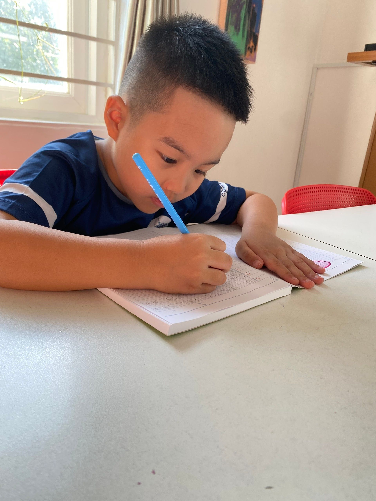
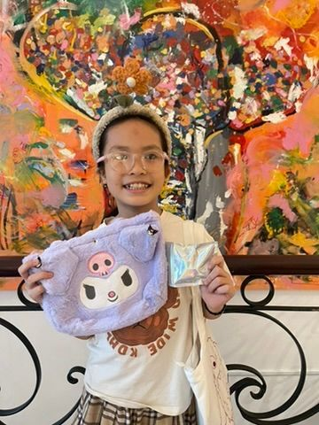
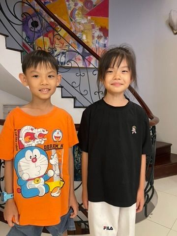
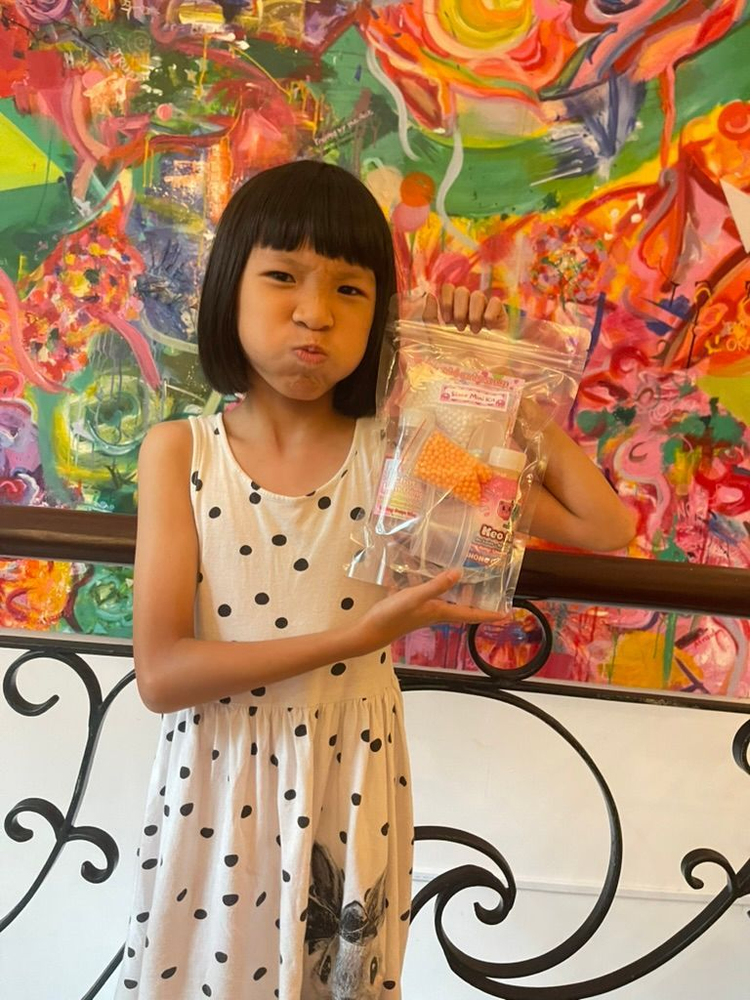
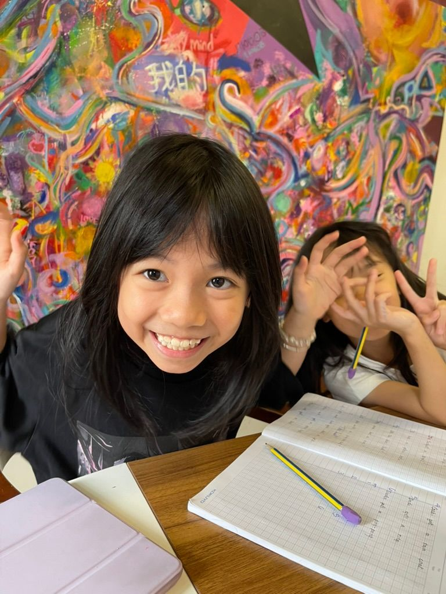
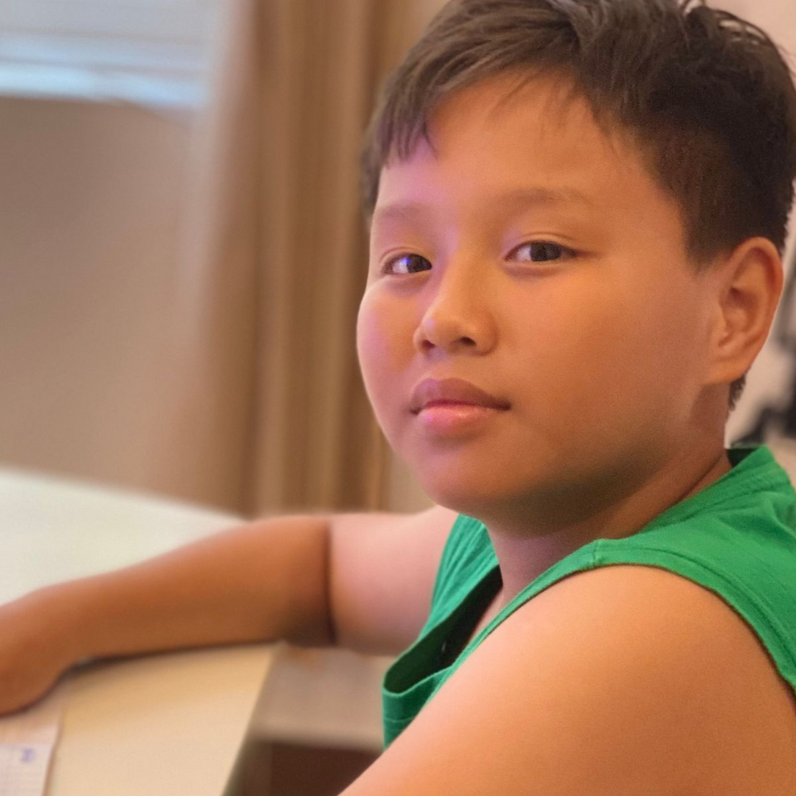

The ESL Program at a glance
- 14 carefully sequenced levels aligned with CEFR standards and Cambridge English.
- Communication first: students speak frequently in every lesson.
- Spiral curriculum with structured review every five lessons.
- Gradual release: clear modeling → guided practice → independent application.
Building Real English Confidence
Many students can memorize vocabulary lists and grammar rules. Far fewer can use English confidently in real situations.
They may know the correct answer in a workbook but struggle to participate in a conversation, explain an opinion, ask meaningful questions, or communicate independently.
At Spark, we believe language is meant to be used.
The Spark ESL Program develops practical communication skills while building the language foundation students need for future academic success.
Students learn to communicate clearly, confidently, and naturally through structured speaking, listening, reading, and writing activities that gradually increase in complexity as they progress through the program.
Our ESL curriculum follows a carefully designed 14-level pathway aligned with internationally recognized CEFR standards and Cambridge English qualifications.
Most importantly, the program focuses on developing genuine language ability rather than simply preparing students for examinations.
We build real language first. Exams come later.

Why English Communication Matters
English opens doors to learning, friendships, travel, future careers, and educational opportunities.
However, communication is about much more than vocabulary and grammar. Students need to be able to:
- Understand spoken English
- Participate in conversations
- Express opinions clearly
- Ask questions confidently
- Explain ideas
- Respond appropriately in different situations
- Communicate independently
The ability to use English confidently develops over time through meaningful interaction and consistent practice. That is why communication sits at the heart of our ESL program.
The Spark ESL Approach
At Spark, students are active participants in every lesson. We do not believe students learn English effectively by sitting quietly and completing worksheets. Instead, students are encouraged to use English continuously throughout each lesson.
Lessons follow a structured learning sequence:
Step 1: Clear Modeling
Teachers introduce new language through examples, demonstrations, and guided instruction. Students first see and hear the language being used correctly.
Step 2: Guided Practice
Students practice new language with teacher support. This stage helps students build confidence before working independently.
Step 3: Independent Application
Students use the language through conversations, activities, role-plays, projects, and discussions. The goal is for students to communicate independently rather than simply repeat answers.
This gradual release model helps students develop confidence while ensuring a strong understanding.
Communication First
Many English programs focus heavily on completing textbook exercises. Spark focuses on communication.
Students are expected to speak frequently throughout every lesson. Lessons prioritize:
- Speaking
- Listening
- Communication
- Interaction
- Confidence building
Reading and writing remain important, but communication always remains a central focus. Language develops through use. Students learn English by actively communicating in English.
The Spiral Learning Model
Language learning is not linear. Students do not learn a grammar structure once and remember it forever. For this reason, the Spark ESL Program follows a spiral curriculum.
Key language concepts are revisited regularly while increasing in complexity. For example: a student may first learn present tense verbs in a simple context. Later, they revisit those same structures while:
- Expanding vocabulary
- Building longer sentences
- Expressing opinions
- Comparing ideas
- Discussing experiences
This repeated exposure helps strengthen long-term retention and confidence.
Built-In Review and Reinforcement
Every five lessons include structured review activities. These review lessons help students:
- Consolidate learning
- Strengthen retention
- Build confidence
- Identify learning gaps
- Practice previously taught language
Regular review helps ensure students develop a lasting understanding rather than short-term memorization.
The 14-Level ESL Pathway
The Spark ESL Program consists of fourteen carefully sequenced levels that guide students from beginner communication to advanced English proficiency.

Building Basic Communication Skills
Students begin developing essential language for everyday communication.
Students learn to
- Introduce themselves
- Answer simple questions
- Follow classroom instructions
- Describe familiar objects
- Talk about daily routines
- Build basic vocabulary
Focus Areas
- Listening
- Speaking
- Vocabulary development
- Early sentence construction
Outcome
Students develop confidence using English in familiar situations.

Building Stronger Language Skills
Students begin communicating in greater detail while expanding their grammar and vocabulary knowledge.
Students learn
- Past simple tense
- Present perfect
- Descriptive language
- Expressing opinions
- Guided writing
- Question formation
Focus Areas
- Conversation development
- Reading comprehension
- Guided writing
- Grammar in context
Outcome
Students communicate with increasing confidence and accuracy.

Developing Independent Communication
Students begin using English more independently across a wider range of situations.
Students develop
- Conditional sentences
- Phrasal verbs
- Extended speaking
- Independent discussion
- Functional writing
- Problem-solving language
Focus Areas
- Speaking confidence
- Communication strategies
- Independent expression
- Fluency development
Outcome
Students can participate confidently in conversations and discussions.

Preparing for More Complex Language
Students begin working with increasingly sophisticated language and academic tasks.
Students develop
- Extended responses
- Reading strategies
- Formal communication
- Academic vocabulary
- Multi-paragraph writing
- Critical thinking
Focus Areas
- Academic communication
- Reading comprehension
- Structured writing
- Analytical thinking
Outcome
Students are prepared for higher-level English learning and academic study.

Precision, Accuracy, and Sophistication
Students refine their language skills while developing greater precision and flexibility.
Students develop
- Formal writing
- Advanced vocabulary
- Complex grammar
- Precision editing
- Presentation skills
- Discussion and debate
- Academic communication
Focus Areas
- Sophisticated writing
- Advanced communication
- Language accuracy
- Independent language use
Outcome
Students communicate confidently and effectively in academic, professional, and real-world contexts.
What Progress Looks Like
As students move through the program, parents often notice:
- Increased confidence speaking English
- Stronger listening skills
- Greater participation in conversations
- Expanded vocabulary
- Improved pronunciation
- Better sentence construction
- Increased independence
- Greater willingness to communicate
Many students who begin as hesitant speakers become increasingly confident communicators over time.
The Spark Difference
Many English programs focus on grammar exercises and textbook completion. Spark focuses on communication.
Students are encouraged to:
- Speak frequently
- Listen actively
- Ask questions
- Express opinions
- Solve problems
- Use English naturally
We do not teach grammar in isolation unless it directly supports communication goals. Language is always taught within meaningful contexts that help students understand how English is actually used.
Our goal is not simply to teach English. Our goal is to help students use English confidently and effectively in the real world.
Not Sure Where to Start?
Book a free assessment and receive personalized recommendations based on your child's age, school background, English level, and academic goals.
Book a Free AssessmentFAQs
Learning a new language is an exciting journey, and parents often have questions about how English develops over time. Below are answers to some of the most common questions families ask about our ESL Program, including language development, communication skills, CEFR levels, assessments, and what progress typically looks like for English learners.
What age can students start the ESL Program?
Students can begin once they are ready for structured language learning. Younger students often benefit from combining ESL with our Phonics & Literacy Development Program.
Is this an exam-preparation program?
No. The program develops the language skills needed for Cambridge exams and future assessments, but it is not designed around exam drilling or test practice.
My child is shy. Will they be expected to speak?
Yes, but gradually. Teachers create a supportive environment that encourages participation without overwhelming students. Confidence develops over time.
Does the program teach grammar?
Yes. However, grammar is taught as a tool for communication rather than as isolated rules to memorize. Students learn how grammar helps them express ideas more effectively.
How are students placed into levels?
Students complete an assessment that evaluates their speaking, listening, reading, writing, and overall language ability. This helps us recommend the most appropriate starting level.
Does my child need phonics first?
Not always. However, younger learners often benefit from developing literacy skills alongside language skills. For many students, phonics and ESL work extremely well together.
How is progress monitored?
Progress is monitored through classroom performance, communication tasks, teacher observations, assessments, and ongoing review lessons.
What happens after ESL?
Students may continue into Spark's Academic English & Writing Pathway or IELTS Success Program depending on their age, goals, and current level.
Begin Your English Journey
Every confident communicator starts somewhere. Whether your child is taking their first steps in English or working toward advanced fluency, understanding their current level is the first step toward meaningful progress.
Book a free assessment and discover the most appropriate starting point within the Spark ESL Program.